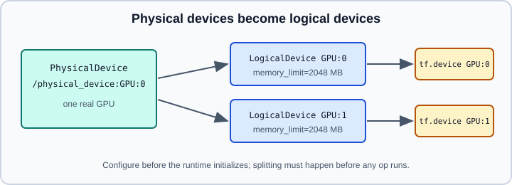

Devices: CPUs, GPUs & TPUs
|
This content was generated with the assistance of AI and should be verified against the official documentation before being relied on in production. |
TensorFlow runs operations on CPUs, NVIDIA GPUs (and plug-in GPUs) and Google TPUs. By default it picks a device for every operation automatically, which is usually right; this page explains how to inspect the devices, control placement, limit or grow GPU memory, split one GPU into logical devices, and connect to a TPU with tf.distribute.TPUStrategy. Installing the GPU build is covered in Installation; multi-device training is in Distributed Training, and the profiling of device usage in Performance, XLA and Profiling.
It targets Python 3.13 and TensorFlow 2.21 with Keras 3.15 (TensorFlow 2.22 is labelled "upcoming"), and was checked against the official guides on 2026-10-30. Examples were run on Python 3.13 with TensorFlow 2.21 and Keras 3.15 (CPU) on 2026-10-31. No GPU was present, so the GPU snippets ran only their CPU path (list_physical_devices("GPU") returned [] and the if gpus: branches were skipped). For the PyTorch counterpart see PyTorch devices and accelerators; general hardware sizing is in Hardware, Memory and Mixed Precision.
Listing devices
import tensorflow as tf
print(tf.config.list_physical_devices()) # CPU and every accelerator
gpus = tf.config.list_physical_devices("GPU")
print("GPUs available:", len(gpus))
for g in gpus:
print(g.name, g.device_type) # /physical_device:GPU:0 GPU
print(tf.config.list_logical_devices("GPU")) # what TensorFlow will actually use
print(tf.test.is_built_with_cuda()) # was the wheel built with CUDA?A physical device is a piece of hardware found at startup. A logical device is what TensorFlow exposes to your program; by default there is one logical device per physical device, and you can change that (see below). Device names follow the pattern /device:GPU:0, /device:CPU:0; the short forms GPU:0 and CPU:0 are accepted in tf.device. TensorFlow always has a CPU device; with several GPUs they are numbered from zero. A TPU appears as TPU devices only after the TPU system has been initialised (see the TPU section).

Device configuration must happen before the runtime initialises, which happens at the first use of a device (creating a tensor, running an op, or listing logical devices). The calls set_visible_devices, set_memory_growth and set_logical_device_configuration raise a RuntimeError afterwards. Put them at the very top of the program, before building models.
Device placement
If an operation has both CPU and GPU kernels and a GPU is available, TensorFlow places it on the GPU. Operations without a GPU kernel (for example many string operations) fall back to the CPU. Tensors produced on a device stay there; copies happen implicitly when an operation needs its inputs elsewhere, so cross-device traffic can hide in innocent-looking code.
import tensorflow as tf
tf.debugging.set_log_device_placement(True) # print the device of each op
a = tf.constant([[1.0, 2.0, 3.0], [4.0, 5.0, 6.0]])
b = tf.constant([[1.0, 2.0], [3.0, 4.0], [5.0, 6.0]])
c = tf.matmul(a, b) # logs something like: Executing op MatMul in device .../GPU:0
print(c.numpy())
# Manual placement with tf.device
with tf.device("/CPU:0"):
x = tf.random.uniform([2, 3])
with tf.device("GPU:0"):
y = tf.matmul(x, tf.ones([3, 2]))
print(y.device)
# Fall back instead of failing if the requested device does not exist
tf.config.set_soft_device_placement(True)
with tf.device("/device:GPU:2"): # no third GPU: soft placement picks another
z = tf.zeros([2])Guidance:
-
Leave placement automatic unless profiling shows a problem. Forcing everything with
tf.device("GPU:0")blocks the fallback for ops that lack a GPU kernel unless soft placement is on. -
Without soft placement, asking for a device that does not exist raises an error; with it, TensorFlow chooses an available device.
-
Inside
tf.functionthe device context is captured when the function is traced; see Graphs and tf.function. -
Keep input pipelines on the CPU and overlap them with prefetching so the GPU does not wait; see tf.data performance.
-
tf.Variableobjects are placed at creation; inside a distribution strategy the strategy decides (see Variables).
Restricting visible GPUs
import tensorflow as tf
gpus = tf.config.list_physical_devices("GPU")
if gpus:
try:
tf.config.set_visible_devices(gpus[0], "GPU") # use only the first GPU
print(tf.config.list_logical_devices("GPU"))
except RuntimeError as e:
print("Visible devices must be set before the runtime starts:", e)On NVIDIA systems you can also hide devices outside the process with the environment variable CUDA_VISIBLE_DEVICES (for example CUDA_VISIBLE_DEVICES=1 python train.py), which is the usual way to share a multi-GPU machine between jobs.
Memory: allocate everything, grow, or cap
By default TensorFlow maps nearly all GPU memory of every visible GPU at startup to reduce fragmentation. Two documented options change that.
import tensorflow as tf
gpus = tf.config.list_physical_devices("GPU")
if gpus:
try:
# Option 1: start small and grow on demand
for gpu in gpus:
tf.config.experimental.set_memory_growth(gpu, True)
logical = tf.config.list_logical_devices("GPU")
print(len(gpus), "physical GPUs,", len(logical), "logical GPUs")
except RuntimeError as e:
print(e) # memory growth must be set before GPUs are initialisedMemory growth is also controllable without code: setting the environment variable TF_FORCE_GPU_ALLOW_GROWTH=true enables it, though the guide describes this as platform specific. Memory growth never releases memory back to the system and can make fragmentation worse, so it is mainly for sharing a GPU with other processes or notebooks.
The second option is a hard cap through a logical device configuration:
import tensorflow as tf
gpus = tf.config.list_physical_devices("GPU")
if gpus:
try:
tf.config.set_logical_device_configuration(
gpus[0],
[tf.config.LogicalDeviceConfiguration(memory_limit=1024)], # MB
)
print(tf.config.list_logical_devices("GPU"))
except RuntimeError as e:
print(e)Use this when several jobs must share a card and you want a firm budget. Do not combine memory growth and a limit for the same GPU; choose one.
Logical devices: one GPU as several
Passing more than one LogicalDeviceConfiguration splits a physical GPU into several virtual ones. This is useful for testing multi-GPU code (for example tf.distribute.MirroredStrategy) on a single GPU, not for speed.
import tensorflow as tf
gpus = tf.config.list_physical_devices("GPU")
if gpus:
try:
tf.config.set_logical_device_configuration(
gpus[0],
[tf.config.LogicalDeviceConfiguration(memory_limit=1024),
tf.config.LogicalDeviceConfiguration(memory_limit=1024)],
)
logical = tf.config.list_logical_devices("GPU")
print(len(gpus), "physical GPU,", len(logical), "logical GPUs")
except RuntimeError as e:
print(e)
strategy = tf.distribute.MirroredStrategy(["GPU:0", "GPU:1"]) # two logical GPUs
print(strategy.num_replicas_in_sync)The logical devices share the same hardware, so there is no parallel speed-up. The same mechanism works for the CPU (several logical CPUs) and is the standard way to test distribution strategies in a unit test without accelerators.
Using multiple GPUs
The recommended way to use several GPUs for training is tf.distribute.MirroredStrategy (synchronous data parallelism on one machine), described on Distributed Training. Manual placement with tf.device("GPU:1") is possible for model-parallel experiments, but you are then responsible for moving data. With tf.function and the XLA compiler (see Performance, XLA and Profiling) placement decisions are made at compile time.
TPUs and tf.distribute.TPUStrategy
A TPU is a Google accelerator reached through a cluster resolver. The TPU examples in this section need a Cloud TPU runtime (Colab, a TPU VM or a TPU Node) and were not executed; on a machine without one, TPUClusterResolver(tpu="") raises ValueError: Please provide a TPU Name to connect to. Keras models and custom loops use it through tf.distribute.TPUStrategy, which, like the other strategies, is entered with strategy.scope() when building the model so variables are created on the TPU devices. The guide’s setup is:
import tensorflow as tf
resolver = tf.distribute.cluster_resolver.TPUClusterResolver(tpu="") # "" on Colab; the TPU name on GCE
tf.config.experimental_connect_to_cluster(resolver)
tf.tpu.experimental.initialize_tpu_system(resolver) # must run at the start of the program
print("TPU devices:", tf.config.list_logical_devices("TPU"))
strategy = tf.distribute.TPUStrategy(resolver)
print("Replicas:", strategy.num_replicas_in_sync)
with strategy.scope():
model = tf.keras.Sequential([
tf.keras.layers.Input(shape=(784,)),
tf.keras.layers.Dense(128, activation="relu"),
tf.keras.layers.Dense(10),
])
model.compile(
optimizer="adam",
loss=tf.keras.losses.SparseCategoricalCrossentropy(from_logits=True),
metrics=["sparse_categorical_accuracy"],
steps_per_execution=50, # run many steps per Python call; cuts overhead
)Points from the guide:
-
Initialise the TPU system once, at program start, before creating any TensorFlow objects that touch devices.
-
With a TPU Node the training data must be read from Google Cloud Storage; a TPU VM can read from anywhere. Datasets loaded with TFDS may need
try_gcs=Trueto reach a public bucket. -
The batch size in a custom loop is the per-replica size:
global_batch = per_replica * strategy.num_replicas_in_sync. With Kerasfityou pass the global batch size. -
TPUs prefer static shapes. A partial final batch changes the shape and triggers recompilation, so build datasets with fixed batch sizes (the guide uses an infinite
repeat()dataset and an explicitsteps_per_epoch;drop_remainder=Trueis the usual alternative for finite data). -
steps_per_executionincompileruns several training steps inside onetf.functioncall; the guide reports a large speed-up in its example and suggests values between 2 and the steps per epoch. -
For a custom training loop, distribute the dataset with
strategy.distribute_datasets_from_function(the guide’s snippet uses the olderexperimental_-prefixed name, which its own log marks as deprecated) and run steps withstrategy.run.
per_replica_batch = 128
def make_dataset(input_context):
ds = tf.data.Dataset.from_tensor_slices((tf.zeros([1024, 784]), tf.zeros([1024], tf.int32)))
ds = ds.shard(input_context.num_input_pipelines, input_context.input_pipeline_id)
return ds.batch(per_replica_batch, drop_remainder=True).prefetch(2)
dist_ds = strategy.distribute_datasets_from_function(make_dataset)
@tf.function
def train_step(batch):
def step(x, y):
# compute loss and apply gradients here; see the custom training loop page
return tf.reduce_mean(x)
return strategy.run(step, args=batch)
for batch in dist_ds:
per_replica_loss = train_step(batch)The complete loop with gradients is on Writing a Training Loop from Scratch. Keras 3 also provides its own distribution API for JAX and TensorFlow, covered in Distributed Training. The guide’s fit example uses TPUStrategy with a Keras model built in strategy.scope(); test anything beyond that pattern (custom layers, mixed precision, large steps_per_execution) on your TPU runtime before relying on it.
Common mistakes
-
Configuring memory growth, visible devices or logical devices after the first op has run: a
RuntimeErrorresults. Do it first. -
Assuming
with tf.device("GPU:0")guarantees every op runs there; ops without GPU kernels need soft placement or fall back. -
Treating logical GPUs created from one card as extra performance.
-
Calling
tf.config.list_physical_devices("GPU")and seeing an empty list, then debugging code instead of the installation (driver,tensorflow-cpu, WSL2 on Windows); see Installation. -
Forgetting to create the model and optimizer inside
strategy.scope()on TPUs. -
Feeding variable-shape batches to a TPU, causing repeated recompilation.
-
Relying on
TF_FORCE_GPU_ALLOW_GROWTHas if it were portable across platforms.